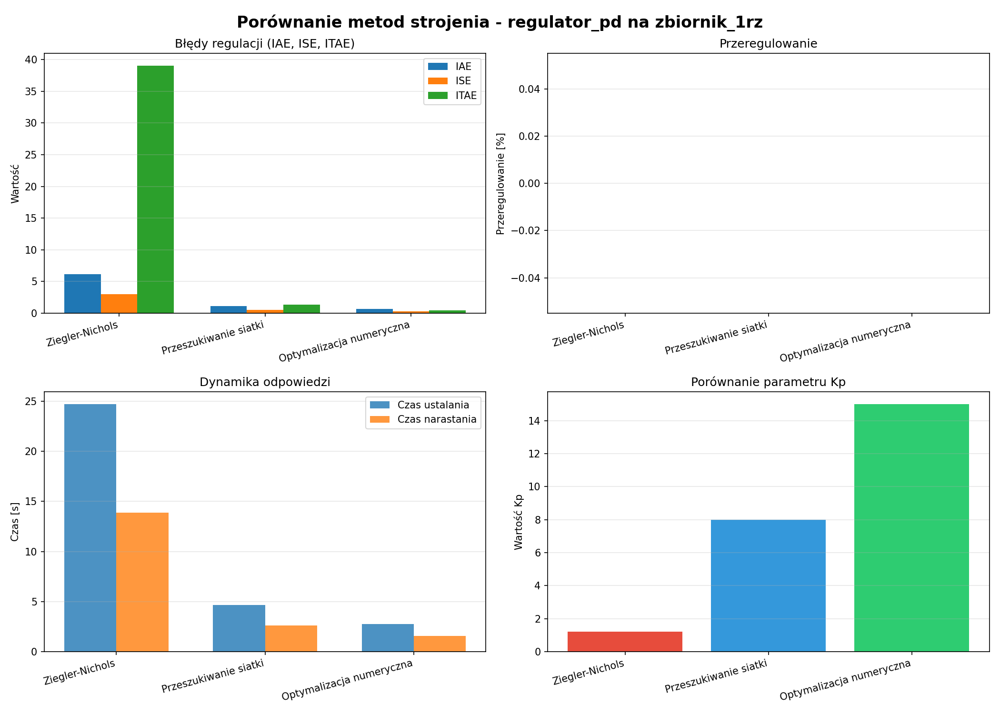

[ANALIZA] Raport Porównawczy Metod Strojenia
Regulator: regulator_pd
Model: zbiornik_1rz
Data wygenerowania: 2025-11-25 21:29:31
Porównanie Parametrów
| Metoda | Kp | Ti | Td |
|---|
| Ziegler Nichols |
1.2 |
None |
3.12 |
| Siatka |
8.0 |
None |
0.1 |
| Optymalizacja |
15.0 |
None |
0.1 |
[WYKRESY] Porównanie Metryk Jakości
| Metoda | IAE | ISE | ITAE | Przeregulowanie [%] | Czas ustalania [s] | Czas narastania [s] |
|---|
| Ziegler Nichols |
6.1725 |
3.0148 |
39.0222 |
0.0000 |
24.7000 |
13.8898 |
| Siatka |
1.1261 |
0.5378 |
1.3278 |
0.0000 |
4.6500 |
2.5915 |
| Optymalizacja |
0.6458 |
0.2973 |
0.4529 |
0.0000 |
2.7500 |
1.5421 |
Najlepsze wartości dla każdej metryki są podświetlone na zielono.
📉 Wykresy Porównawcze

Wnioski
Najlepsza metoda (wg IAE): Optymalizacja numeryczna
IAE: 0.6458
Porównanie z innymi:
- Ziegler-Nichols: IAE=6.1725 (+855.9%)
- Przeszukiwanie siatki: IAE=1.1261 (+74.4%)